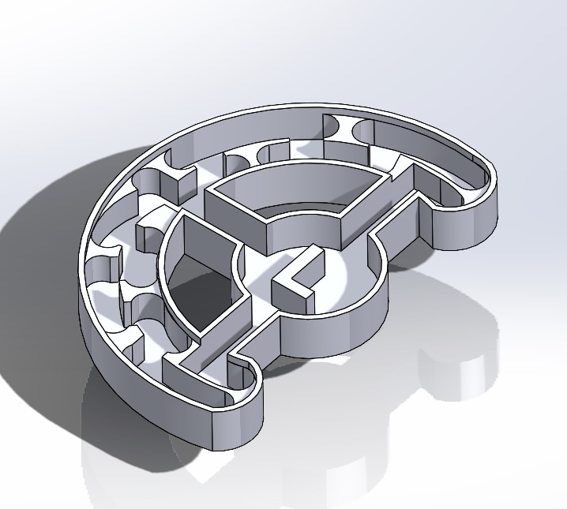
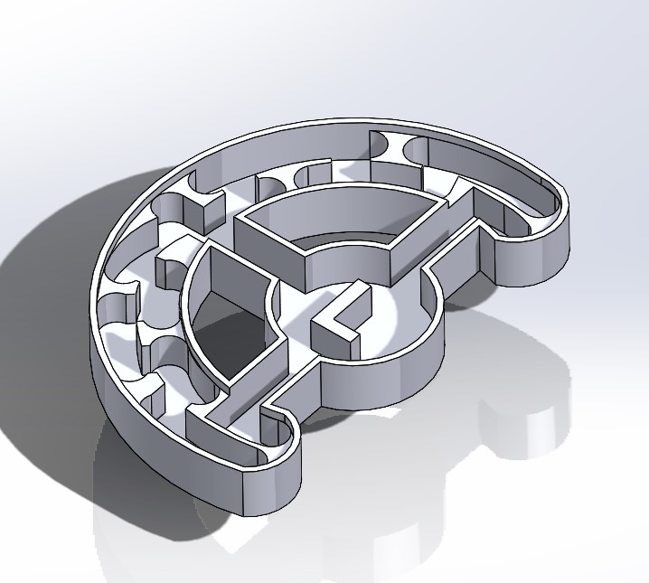

Projects

GameCubePC
The GameCube has become a timeless console, however the technology within has not aged as well. Based on a project done by Youtube Channel Tech by Matt, the purpose of this project was to create a portable gaming machine while still maintaining the pleasurable aesthetics of the GameCube. The original project began to meet these requirements, however it lacked actual use of the handle associated with the game. Using the parts from a barebones pc sold by Asrock, the A300 DeskMini, along with a Dremel, soldering iron and a 3d printer, I created a working desktop pc hiding in the shell of a GameCube.

3D Printed Phone Case
While phone cases are very cheap and readily available, they lack creativity that I love to have in my projects. That's why I turned my phone case into one of those projects. To create this case, I traced an image taken from the animated music video, "The Wolf" by Siamés, then developed three separate models that could be overlapped in CURA, my 3D printing slicer of choice. This case is made of blue TPU, black PLA, and glow in the dark PLA. The next version will add white PLA into the case and dedicate two layers of PLA to making the design.

3D Printed Wooden Violin
During the most isolating parts of the pandemic, I decided I would begin to learn a second instrument. The choice I made was the violin. However, the price of a new violin kit was about 120 dollars. At the same time, I learned about the Hovalin, a 3D printable violin, and wood filament, a mixture of wood fibers and PLA that creates a printable material that sets much like real wood, with a lot of the same properties. After adjusting the model for the expansion of the filament and 3 days of printing, the violin was complete. Tuners, strings, and a bow were purchased for this project.
 

Maze Project
As part of my Computer Aided Manufacturing class for my Manufacturing Minor, I was assigned the task of designing and manufacturing a custom maze out of a 2 by 3 by 1 inch piece of aluminum. The maze was designed in Solidworks to fit a 5mm diameter ball bearing on its paths. It was manufactured on a knee and column mill, using face mills, drills, and end mills. The paths for each tool were designed in the Solidworks extension CAMworks.

3D Printed Computer Frame
During the pandemic, as most of my schoolwork went online, never had to access that work outside of my home. Once in person classes began again, I lost the ability to access this work outside of my home. I decided that instead of carrying a giant tower around, I would construct a server that could run 24/7. I had all the components for this computer except for the case, so I chose to 3D print a custom frame for the parts. I designed it to be able to print as one part, hold MicroATX computer parts, and keep the footprint no bigger than the size of the motherboard. The frame itself is made of PLA with threaded brass inserts melted into place to hold the computer parts securely. I can access the machine on any computer or phone using a free remote desktop application called NoMachine.